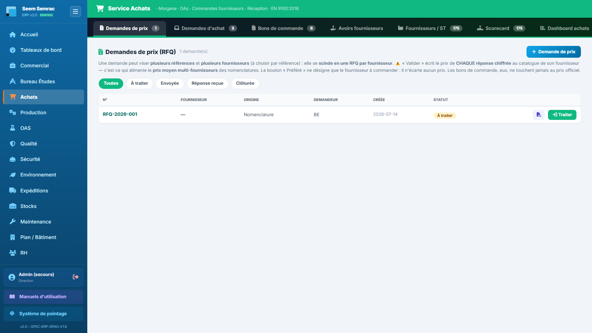
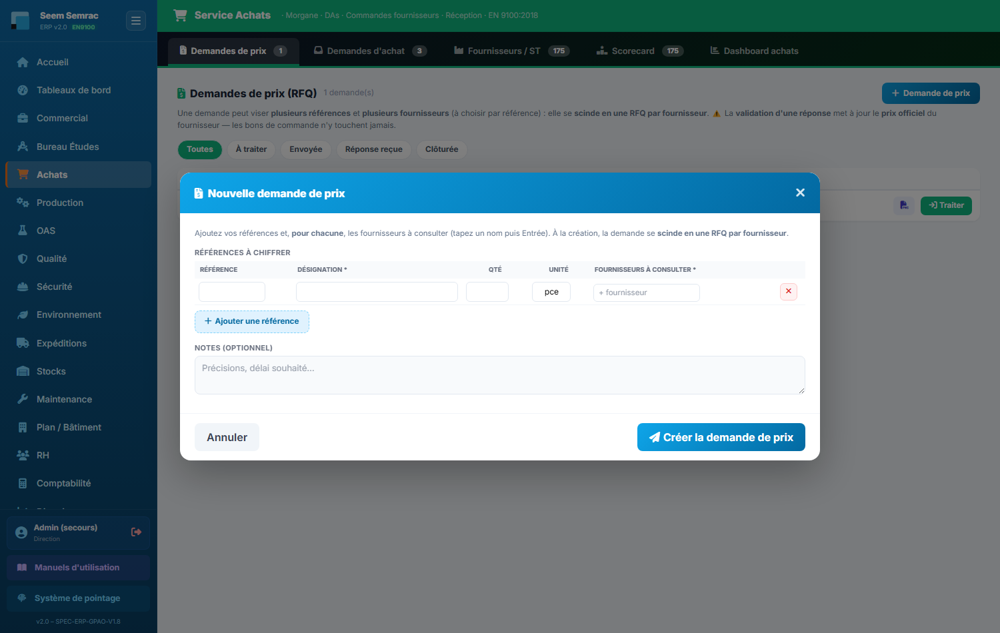
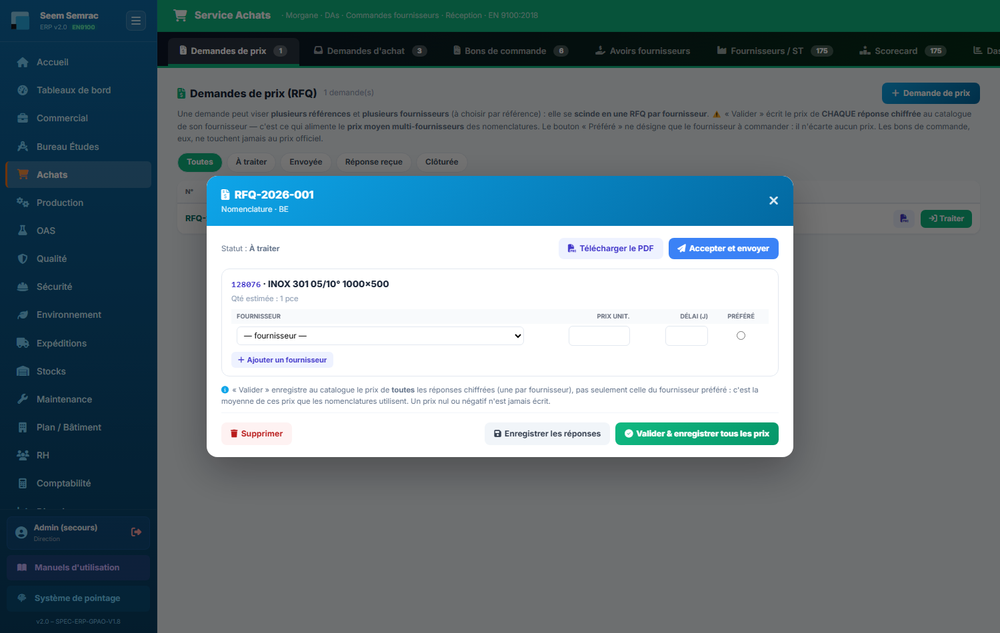
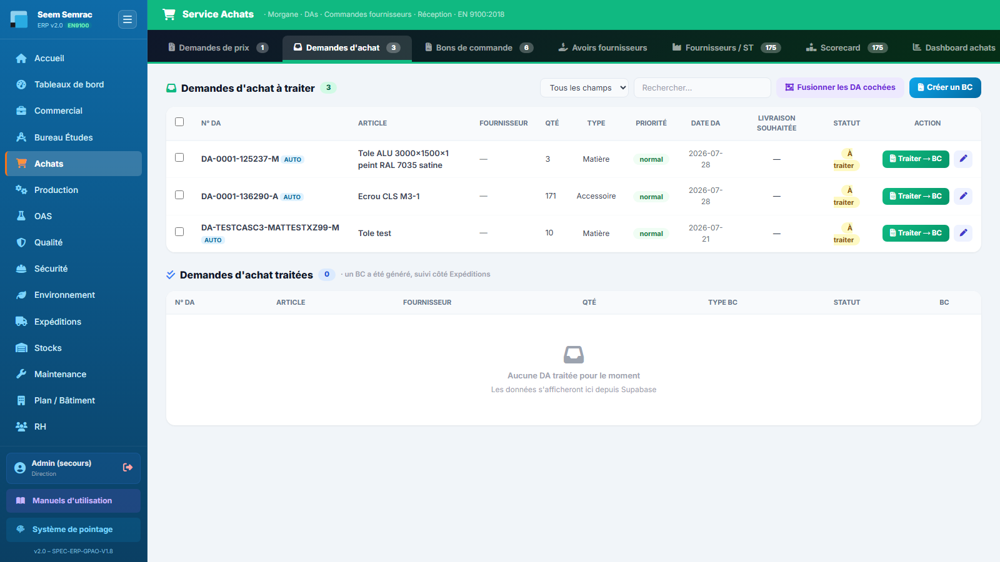
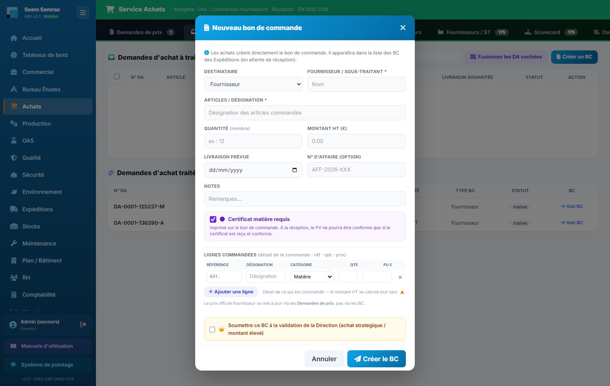
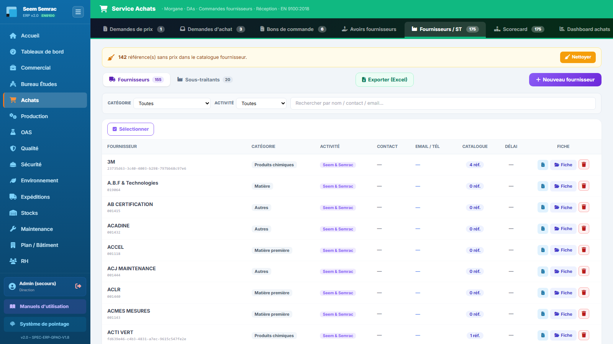
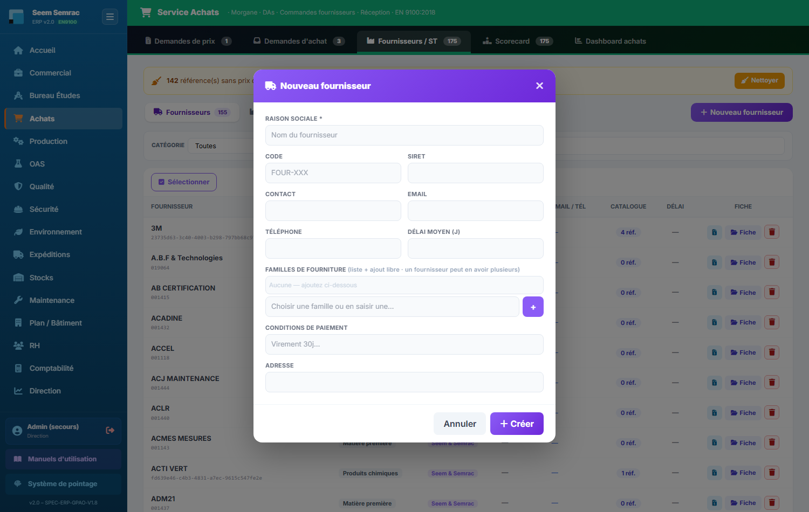
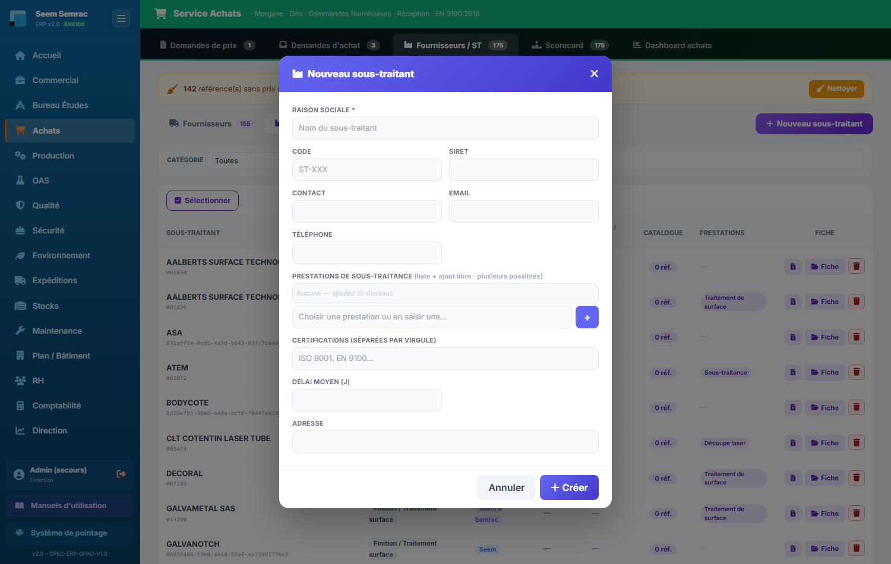
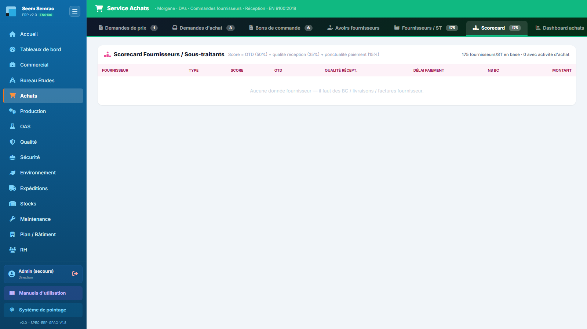
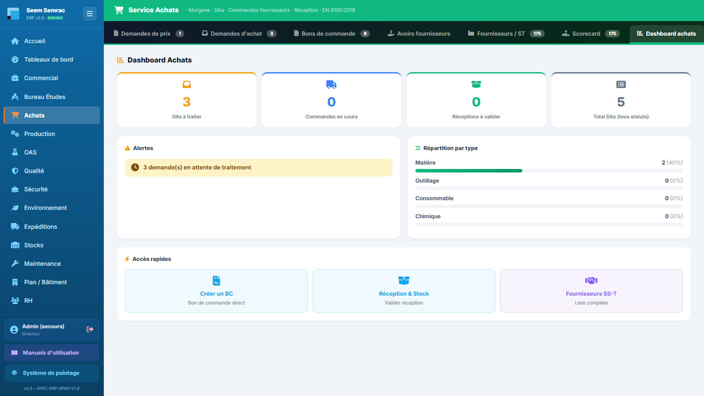

Le service Achats pilote tout ce que l'entreprise achète : consultations de prix auprès des fournisseurs (RFQ), demandes d'achat venues de l'atelier, bons de commande fournisseurs et sous-traitants, référentiel et évaluation des fournisseurs. Vous apprendrez ici à consulter des prix, transformer une demande d'achat en bon de commande et tenir votre panel fournisseurs à jour.
👤 Pour qui : Acheteur(se) (écriture : Achats, Stocks — lecture : Commercial, BE, Production, Expéditions, Maintenance)🧭 Dans l'ERP : Sidebar → Achats🗂 5 onglets
Règle d'or du service : les prix officiels d'un fournisseur viennent exclusivement des réponses aux demandes de prix (RFQ) validées. Les bons de commande n'écrivent jamais le prix au catalogue : un prix saisi sur un BC n'engage que ce BC. À l'ouverture, la page s'affiche sur l'onglet Demandes d'achat ; les autres onglets sont accessibles par les boutons en haut de page.
1
Demandes de prix (RFQ)
À quoi ça sert. C'est ici que vous consultez les fournisseurs et sous-traitants pour obtenir des prix. Une demande peut viser plusieurs références et, pour chaque référence, plusieurs fournisseurs : à la création, l'ERP la scinde automatiquement en une RFQ par fournisseur. Quand vous validez une réponse, le prix retenu devient le prix officiel du catalogue de ce fournisseur — c'est la seule porte d'entrée des prix dans l'ERP.
Ce que vous voyez
En haut, le titre avec le nombre de demandes et le bouton « Demande de prix » (création). Une rangée de pastilles filtre la liste par statut : Toutes, À traiter, Envoyée, Réponse reçue, Clôturée. Le tableau liste chaque RFQ avec les colonnes N°, Fournisseur, Origine (Analyse DT, Nomenclature ou Libre — d'où vient le besoin), Demandeur, Créée (date) et Statut. Une pastille à relancer apparaît sur les demandes restées trop longtemps sans réponse. À droite de chaque ligne : un bouton PDF (télécharge le document à envoyer au fournisseur), un bouton « Relancer » (si la demande est à relancer, il régénère le PDF) et le bouton vert « Traiter » qui ouvre la fiche de la demande.

Demandes de prix (RFQ) — les pastilles de statut au-dessus du tableau et, sur chaque ligne, les boutons PDF et « Traiter ».
Pas à pas — créer une demande de prix
Cliquez sur « Demande de prix » (ou, depuis l'onglet Fournisseurs / ST, sur le petit bouton devis d'une ligne fournisseur : la demande s'ouvre pré-remplie avec ce fournisseur).
Sur la première ligne, saisissez la référence (facultative), la désignation (obligatoire), la quantité et l'unité (« pce » par défaut).
Dans la colonne « Fournisseurs à consulter », tapez le nom d'un fournisseur ou sous-traitant puis appuyez sur Entrée : il s'ajoute sous forme d'étiquette. Répétez pour consulter plusieurs fournisseurs sur la même référence — chaque référence doit en avoir au moins un.
Cliquez « Ajouter une référence » pour d'autres lignes, complétez éventuellement les Notes (précisions, délai souhaité…).
Cliquez « Créer la demande de prix » : l'ERP crée une RFQ par fournisseur consulté et confirme le nombre de demandes créées.
Champ
Saisie
Obligatoire
Explication
Référence
Texte
Non
Référence interne de l'article à chiffrer.
Désignation
Texte
Oui
Description de l'article ou de la prestation ; une ligne sans référence ni désignation est ignorée.
Qté
Nombre
Non
Quantité estimée, transmise au fournisseur à titre indicatif.
Unité
Texte
Non
« pce » par défaut (pièce) ; adaptez si besoin (kg, m, barre…).
Fournisseurs à consulter
Nom + Entrée (liste proposée)
Oui (≥ 1 par référence)
Fournisseurs et sous-traitants existants proposés en saisie ; un nom libre est aussi accepté.
Notes
Texte libre
Non
Précisions communes à la demande (délai souhaité, conditions…).

Nouvelle demande de prix — le bloc « Références à chiffrer » : une ligne par référence (Référence, Désignation obligatoire, Qté, Unité « pce ») et la colonne Fournisseurs à consulter où chaque nom validé par Entrée devient une étiquette. « Ajouter une référence » empile les lignes ; « Créer la demande de prix » scinde le tout en une RFQ par fournisseur.
Pas à pas — envoyer, saisir les réponses et valider les prix
Ouvrez la demande avec « Traiter ». Si elle est À traiter, cliquez « Accepter et envoyer » : elle passe au statut Envoyée.
Cliquez « Télécharger le PDF » et transmettez le document au fournisseur (par email, hors ERP).
À réception des offres, rouvrez la demande : pour chaque référence, saisissez le prix unitaire et le délai (jours) proposés. Le bouton « Ajouter un fournisseur » permet d'enregistrer l'offre d'un fournisseur supplémentaire sur une référence.
Cochez la colonne « Retenu » pour désigner l'offre gagnante de chaque référence (une seule par référence).
« Enregistrer les réponses » sauvegarde votre saisie sans rien clôturer ; « Valider & mettre à jour les prix » enregistre puis met à jour les prix officiels au catalogue des fournisseurs retenus et clôture la RFQ (statut Clôturée).

Traiter une demande de prix — l'en-tête rappelle le n° de RFQ, son origine et son statut, avec « Télécharger le PDF » et « Accepter et envoyer ». Sous chaque référence, une ligne par fournisseur consulté : Prix unit., Délai (j) et le bouton radio Retenu. « Enregistrer les réponses » sauvegarde seulement ; « Valider & mettre à jour les prix » écrit le prix retenu au catalogue et clôture la RFQ.
Règles & points d'attention
La validation exige au moins une offre cochée « Retenu » avec un prix saisi ; sinon l'ERP refuse et vous le signale.
Les prix validés alimentent le catalogue fournisseur et servent ensuite partout dans l'ERP (nomenclatures, coûts). Les bons de commande ne modifient jamais ces prix.
L'origine d'une RFQ indique qui a déclenché le besoin : une analyse de demande de travaux (« Analyse DT »), une nomenclature, ou une création libre depuis cet onglet.
Le bouton « Supprimer » dans la fiche efface définitivement la demande (une confirmation est demandée).
Attention : l'ERP ne transmet pas la demande au fournisseur tout seul — « Accepter et envoyer » change le statut, mais c'est à vous d'envoyer le PDF téléchargé. Une demande envoyée sans réponse finit marquée à relancer : utilisez le bouton « Relancer » pour régénérer le PDF.
Astuce : partez de l'onglet Fournisseurs / ST pour consulter un fournisseur précis : le bouton devis de sa ligne ouvre la demande de prix déjà pré-remplie à son nom.
2
Demandes d'achat
À quoi ça sert. Les demandes d'achat (DA) sont les besoins exprimés par l'atelier et les autres services : matière, outillage, consommables, produits chimiques. Votre travail d'acheteur consiste à les transformer en bons de commande (BC) fournisseur ou sous-traitant. Une fois le BC créé, son suivi (arrivée, réception) se fait dans le service Expéditions.
Ce que vous voyez
Deux listes superposées. En haut, « Demandes d'achat à traiter » avec son compteur vert : colonnes N° DA, Article, Fournisseur, Qté, Type (Matière, Outillage, Consommable, Chimique), Priorité (critique / urgent / normal), Date DA, Livraison souhaitée, Statut et le bouton d'action « Traiter → BC ». Une pastille AUTO à côté du numéro signale une DA générée automatiquement par l'ERP (et non saisie à la main) ; le numéro d'affaire lié s'affiche sous l'article. En bas, « Demandes d'achat traitées » (compteur bleu) : un BC a été généré, avec les colonnes Type BC (Fournisseur ou Sous-traitant), Statut (Commandé ✓, En cours, Reçu ✓, Annulé…) et un lien « Voir BC » qui mène aux bons de commande du service Expéditions. Au-dessus des listes : une barre de recherche (par article, fournisseur, demandeur, type ou priorité), le bouton « Regrouper par fournisseur » et le bouton « Créer un BC ».

Demandes d'achat — la liste « à traiter » en haut avec priorités et bouton « Traiter → BC », les DA déjà transformées en BC en dessous.
Pas à pas — transformer une DA en bon de commande
Sur la ligne de la DA, cliquez « Traiter → BC ». La fenêtre « Traiter la DA — Bon de Commande » s'ouvre, pré-remplie avec l'article, le fournisseur pressenti et la livraison souhaitée.
Choisissez le type de commande (BC Fournisseur ou BC Sous-Traitant), vérifiez le fournisseur / ST, les articles, saisissez le montant HT et la livraison prévue ; le n° d'affaire et les notes sont optionnels.
Deux issues possibles : « Enregistrer (brouillon) » garde la DA dans la liste « à traiter » avec la pastille Brouillon — le bouton devient « Reprendre » pour continuer plus tard. « Soumettre → créer BC » crée le bon de commande (le fournisseur est alors obligatoire).
Après soumission, l'ERP confirme le numéro du BC créé : la DA bascule dans « traitées » et le BC apparaît côté Expéditions, en attente de réception.
Champ
Saisie
Obligatoire
Explication
Type de commande
Liste : BC Fournisseur / BC Sous-Traitant
Oui (prérempli)
Détermine si le BC part chez un fournisseur ou un sous-traitant.
Fournisseur / ST
Texte (raison sociale)
Oui pour soumettre
Destinataire du bon de commande.
Articles / Prestation
Texte
Oui (prérempli avec la DA)
Désignation de ce qui est commandé.
Montant HT (€)
Nombre
Non
Montant hors taxes du BC. N'affecte pas le prix officiel du catalogue.
Livraison prévue
Date
Non
Date attendue — elle sert au suivi des arrivées et au calcul de ponctualité (OTD) côté Expéditions.
N° d'affaire
Texte (AFF-2026-XXX)
Non
Rattache la dépense à une affaire cliente.
Notes
Texte libre
Non
Conditions, remarques pour le fournisseur.
Pas à pas — créer un bon de commande direct (sans DA)
Cliquez « Créer un BC » en haut de l'onglet : la fenêtre « Nouveau bon de commande » s'ouvre.
Choisissez le destinataire (Fournisseur ou Sous-traitant), saisissez son nom (obligatoire) et les articles / désignation (obligatoire), puis quantité, montant HT, livraison prévue, n° d'affaire et notes.
Détaillez la commande dans « Lignes commandées » : pour chaque ligne, référence, désignation, catégorie (Matière, Accessoires, Outils, Chimique, Consommable, Autres), quantité et prix unitaire. Le montant HT se calcule tout seul à partir des lignes.
Pour un achat stratégique ou d'un montant élevé, cochez « Soumettre ce BC à la validation de la Direction » : le BC sera présenté dans l'onglet « À valider » du service Direction.
Cliquez « Créer le BC » : il apparaît aussitôt dans la liste des BC du service Expéditions, en attente de réception.

Créer un BC — destinataire, articles, montant HT, livraison prévue et lignes détaillées ; le montant se recalcule à partir des lignes.
Pas à pas — regrouper les DA d'un même fournisseur
Cliquez « Regrouper par fournisseur » puis confirmez.
L'ERP fusionne les DA « à traiter » qui visent le même fournisseur en une seule demande par fournisseur et vous indique le nombre de fusions effectuées ; les DA absorbées disparaissent des listes. Vous ne passez plus qu'un seul BC au lieu de plusieurs.
Règles & points d'attention
Une DA est considérée traitée dès qu'un BC a été créé pour elle ; son avancement (commandé, en cours, reçu) se suit ensuite dans Expéditions via le lien « Voir BC ».
Les DA critique sont à traiter en priorité — elles remontent aussi en alerte sur le Dashboard achats.
Le prix saisi sur un BC (montant, prix unitaires des lignes) ne met pas à jour le prix officiel du fournisseur : pour cela, passez par une demande de prix (onglet 1).
Le champ Fournisseur / ST de la fenêtre de traitement est une liste déroulante, plus une saisie libre. Elle propose d'abord, sous « Référencés pour <article> », les seuls fournisseurs qui portent cette référence au catalogue ; les autres restent disponibles dans le groupe suivant. Si la référence n'est encore au catalogue de personne, le premier groupe est vide et le second est intitulé « Aucun fournisseur référencé pour cette référence » — vous choisissez alors librement, et c'est le signal qu'une demande de prix serait utile.
Astuce : utilisez « Enregistrer (brouillon) » quand il vous manque une information (prix, délai) : la DA reste visible dans « à traiter » avec la pastille Brouillon, et le bouton « Reprendre » restaure toute votre saisie.
3
Fournisseurs / ST
À quoi ça sert. C'est le référentiel de votre panel : d'un côté les fournisseurs (matière, visserie, consommables…), de l'autre les sous-traitants (traitements de surface, découpe, rectification…). Chaque fiche porte les contacts, le catalogue de références avec prix, les familles de fourniture ou prestations, et sert de base aux demandes de prix et aux bons de commande.
Ce que vous voyez
Un sélecteur bascule entre les deux listes : Fournisseurs et Sous-traitants, chacun avec son compteur. À droite : le lien « Exporter (Excel) » (exporte tous les fournisseurs et sous-traitants avec leur catalogue et prestations, feuille Données + feuille TCD) et le bouton violet « Nouveau fournisseur » / « Nouveau sous-traitant » (le libellé suit la liste affichée). Une barre de filtres permet de restreindre par catégorie, par activité (Seem, Semrac, Seem & Semrac) ou par recherche libre (nom, contact, email). Le tableau des fournisseurs affiche : nom et code, catégorie, activité, contact, email / téléphone, Catalogue (nombre de références connues), Délai moyen en jours, et les actions. Celui des sous-traitants remplace le délai par les Prestations (étiquettes, les 4 premières puis « +N ») et signale par une pastille à qualifier un sous-traitant pas encore approuvé. Sur chaque ligne : un bouton devis (demander un prix — ouvre une RFQ pré-remplie), le bouton « Fiche » (ouvre la fiche complète pour consulter ou modifier) et une corbeille (suppression). Si des références de catalogue n'ont pas de prix, un bandeau jaune l'annonce en haut avec le bouton « Nettoyer ».

Fournisseurs / ST — la bascule Fournisseurs / Sous-traitants, les filtres catégorie / activité et, sur chaque ligne, les boutons devis, Fiche et suppression.
Pas à pas — créer un fournisseur ou un sous-traitant
Affichez la bonne liste (Fournisseurs ou Sous-traitants) puis cliquez le bouton violet « Nouveau fournisseur » / « Nouveau sous-traitant ».
Renseignez au minimum la raison sociale (obligatoire) ; complétez code, SIRET, contact, email, téléphone, délai moyen, adresse.
Pour un fournisseur, ajoutez ses familles de fourniture (Aluminium, Acier, Inox, Visserie…) ; pour un sous-traitant, ses prestations (Oxydation anodique sulfurique, Zingage, Rectification…) : choisissez dans la liste proposée ou tapez librement, puis Entrée ou « + » — plusieurs étiquettes possibles.
Cliquez « Créer » : la fiche apparaît dans la liste et devient disponible dans les demandes de prix et les bons de commande.

Nouveau fournisseur — seule la Raison sociale porte l'astérisque (obligatoire) ; le Code suit le format FOUR-XXX. Le bloc Familles de fourniture se remplit en choisissant dans la liste ou en saisissant librement, puis « + » : chaque famille s'ajoute au-dessus. « Créer » verse la fiche dans la liste Fournisseurs.
Champ
Saisie
Obligatoire
Explication
Raison sociale
Texte
Oui
Nom officiel du fournisseur ou du sous-traitant.
Code
Texte (FOUR-XXX / ST-XXX)
Non
Code court interne, affiché sous le nom dans la liste.
SIRET
Texte
Non
Identifiant légal de l'entreprise.
Contact / Email / Téléphone
Texte
Non
Interlocuteur habituel et ses coordonnées.
Familles de fourniture (fournisseur)
Étiquettes (liste + saisie libre)
Non
Ce que le fournisseur sait livrer ; plusieurs familles possibles.
Prestations (sous-traitant)
Étiquettes (liste + saisie libre)
Non
Opérations sous-traitées proposées ; plusieurs possibles.
Certifications (sous-traitant)
Texte, séparées par des virgules
Non
Ex. : ISO 9001, EN 9100 — utile pour les exigences aéronautiques.
Délai moyen (j)
Nombre
Non
Délai de livraison habituel, affiché dans la liste des fournisseurs.
Conditions de paiement (fournisseur)
Texte
Non
Ex. : virement 30 jours.
Adresse
Texte
Non
Adresse postale.

Nouveau sous-traitant — même trame que le fournisseur, mais le Code suit le format ST-XXX et deux champs remplacent les familles et les conditions de paiement : Prestations de sous-traitance (liste ou saisie libre, plusieurs possibles) et Certifications séparées par des virgules (ISO 9001, EN 9100…). Sans prestation ni approbation, la fiche créée reste marquée « à qualifier » dans la liste.
Pas à pas — nettoyer les références sans prix
Quand le bandeau jaune « N référence(s) sans prix dans le catalogue fournisseur » s'affiche, cliquez « Nettoyer ».
La fenêtre liste les références concernées (référence, désignation, fournisseur) et marque « éligible » celles sans prix depuis plus de 90 jours.
Supprimez une référence isolée avec le × de sa ligne, ou cliquez « Purger les éligibles (> 90 j) » pour tout nettoyer d'un coup (confirmation demandée).
Règles & points d'attention
Le badge Activité (Seem, Semrac ou Seem & Semrac) indique pour quel site le fournisseur travaille ; le filtre du même nom s'appuie dessus.
Le compteur Catalogue (« N réf. ») correspond aux références connues de ce fournisseur — alimentées principalement par les demandes de prix validées.
Les cases à cocher de la barre de sélection permettent une suppression groupée de plusieurs fiches à la fois.
Attention : la suppression d'un fournisseur ou d'un sous-traitant est définitive (confirmation demandée). Si la fiche est référencée ailleurs dans l'ERP (BC, catalogue…), l'ERP peut refuser la suppression et vous l'indique.
Astuce : le bouton devis d'une ligne est le chemin le plus rapide pour consulter un fournisseur précis : il ouvre directement une nouvelle demande de prix avec ce fournisseur déjà positionné.
4
Scorecard
À quoi ça sert. La scorecard évalue objectivement vos fournisseurs et sous-traitants à partir de leur historique réel dans l'ERP : ponctualité de livraison, qualité à réception et régularité de paiement. Elle vous aide à choisir qui consulter, qui surveiller et qui écarter — une exigence classique des audits EN 9100.
Ce que vous voyez
Un tableau classant les fournisseurs et sous-traitants ayant une activité d'achat (au moins un BC) ; l'en-tête rappelle la formule du score : OTD 50 % + qualité réception 35 % + ponctualité paiement 15 %, ainsi que le nombre de fiches en base et celles avec activité. Colonnes : Fournisseur (cliquable, ouvre la fiche), Type (Fournisseur / Sous-traitant), Score (pastille de couleur : ≥ 85 vert, 65–84 orange, < 65 rouge), OTD (livraisons à l'heure : vert ≥ 90 %, orange ≥ 75 %, rouge en dessous — avec le nombre de livraisons évaluées), Qualité récept. (réceptions sans non-conformité : vert ≥ 98 %, orange ≥ 90 %, rouge en dessous — le nombre de NC s'affiche le cas échéant), Délai paiement (jours), Nb BC et Montant total acheté en euros. Un tiret « — » signifie : pas encore assez de données pour noter.

Scorecard — le score global en pastille colorée, décomposé en OTD, qualité de réception et délai de paiement.
Pas à pas
Parcourez le tableau : les pastilles rouges (score < 65, OTD < 75 %, qualité < 90 %) désignent les fournisseurs à surveiller ou à challenger.
Cliquez sur le nom d'un fournisseur pour ouvrir sa fiche complète et creuser (catalogue, historique).
Avant de lancer une demande de prix importante, vérifiez ici l'OTD et la qualité des candidats pressentis.
Règles & points d'attention
Les notes se construisent automatiquement à partir des BC, des livraisons (dates prévues vs réelles), des non-conformités déclarées en Qualité et des factures fournisseur réglées en Comptabilité : plus l'historique est riche, plus le score est fiable.
Un fournisseur sans aucun BC n'apparaît pas dans le tableau — d'où le message « Aucune donnée fournisseur » tant qu'il n'y a ni BC, ni livraison, ni facture.
L'OTD est mesuré sur la première date de livraison promise : repousser une date ne « blanchit » pas un retard.
Astuce : combinez la scorecard et l'onglet Demandes de prix : consultez systématiquement au moins deux fournisseurs bien notés pour garder de la concurrence sur vos références clés.
5
Dashboard achats
À quoi ça sert. C'est la vue d'ensemble du service : votre charge du moment (DA en attente), les urgences à ne pas rater et la répartition des achats par type. C'est l'écran à consulter en début de journée pour organiser votre travail.
Ce que vous voyez
Quatre tuiles de compteurs : DAs à traiter, Commandes en cours, Réceptions à valider et Total DAs (tous statuts). En dessous, deux blocs côte à côte : les Alertes — un encart rouge « N DA(s) CRITIQUE(S) en attente — traitement prioritaire immédiat » si des DA critiques attendent, un encart jaune « N demande(s) en attente de traitement », ou « Aucune alerte active » quand tout est traité — et la Répartition par type (Matière, Outillage, Consommable, Chimique) en barres de pourcentage. Enfin, trois accès rapides : « Créer un BC » (ouvre la création directe de bon de commande), « Réception & Stock » (page de validation des réceptions) et « Fournisseurs SS-T » (liste complète des fournisseurs et sous-traitants).

Dashboard achats — les quatre compteurs, le bloc Alertes et la répartition des DA par type d'achat.
Pas à pas
Commencez par le bloc Alertes : s'il affiche des DA critiques, filez à l'onglet Demandes d'achat les traiter en premier.
Surveillez la tuile Réceptions à valider : des marchandises sont arrivées et attendent votre validation via l'accès rapide « Réception & Stock ».
Utilisez la répartition par type pour repérer une dérive (ex. : explosion des achats de consommables) et en parler en réunion.
Règles & points d'attention
Les compteurs se recalculent à chaque affichage de la page à partir des demandes d'achat réelles — aucun chiffre saisi à la main.
« Commandes en cours » compte les DA déjà transformées en BC dont la réception n'est pas terminée ; leur détail se suit côté Expéditions.
Bon à savoir : des analyses achats plus poussées (tendances, montants, filtres par période) existent dans Tableaux de bord → Dashboard Achats, commun à toute l'entreprise.